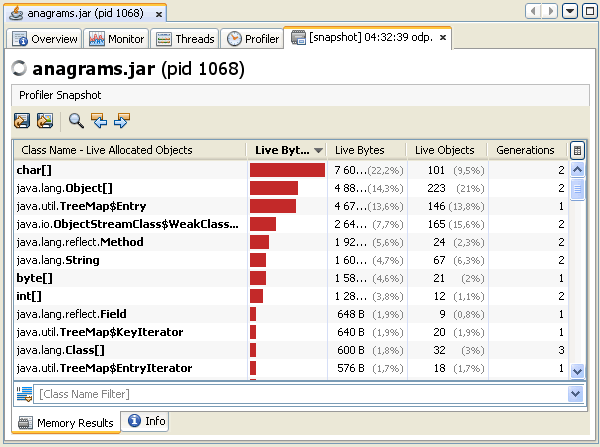
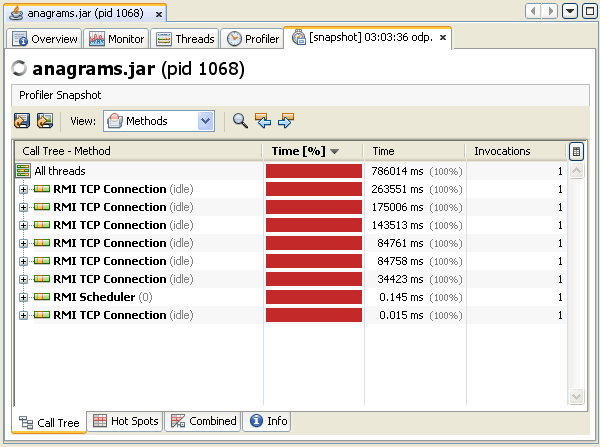

애플리케이션 프로파일링
VisualVM은 애플리케이션별 탭에서 로컬및 원격 애플리케이션을 위한 데이터를 제공한다. 여러개의 애플리케이션 탭을 열수도 있다. 각각의 애플리케이션 탭은 애플리케이션에 대한 각각의 정보를 보여주기 위해 하위탭을 가진다.
애플리케이션 프로파일링
애플리케이션의 Profiler탭은 롴컬 애플리케이션의 프로파일링을 시작하거나 중지할 수 있다. 프로파일링 결과는 Profiler에 표시된다. 프로파일링 결과를 갱신하거나 가비지 컬렉팅을 하도록 호출하고 프로파일링 데이터를 저장하기 위해서는 툴바를 사용할 수 있다.
기본적으로 프로파일링 툴은 애플리케이션을 프로파일링하는 준비가 되기 전에는 실행되지 않는다. 다음의 두가지 프로파일링 옵션을 사용할 수 있다.
- CPU Profiling. 애플리케이션의 성능을 프로파일링하기 위해 이 옵션을 사용
- Memory Profiling. 애플리케이션의 메모리 사용을 분석하기 위해 이 옵션을 사용 결과 데이터는 애플리케이션에 할당된 객체와 클래스를 표기한다.
프로파일링을 시작하면, VisualVM은 로컬 애플리케이션에 붙어서 프로파일링 데이터를 수집하기 시작한다. 프로파일링 결과가 사용가능한 상태가 되면 Profiler탭에 자동으로 표시된다.
툴바 사용
프로파일링 결과를 활용하기 위해 Profiling Results화면의 툴바에 있는 버튼들을 사용할 수 있다.
- Update Result Automatically. 이 버튼을 사용하면, 표시되는 프로파일링 결과가 짧은 시간간격(약 2초)으로 자동으로 업데이트된다.
- Update Result Now. 결과를 즉시 업데이트하기 위해 클릭한다.
- Run Garbage Collection. 가비지 컬렉션을 실행하기 위해 클릭한다.
- Reset Collected Results. 이미 축적된 프로파일링 결과를 버리기 위해 클릭한다.
- Take Snapshot. 현재의 프로파일 데이터의 스냅샷을 얻기 위해 클릭한다. 스냅샷을 생성하면, 스냅샷은 새로운 하위탭으로 열린다.
- Save Current View. 현재 보고 있는 프로파일링 결과를 .png 이미지 파일로 저장하기 위해 클릭한다. 이 버튼을 클릭하면 이미지를 저장할 위치를 물어보는 팝업창이 뜬다.
프로파일링 결과 필터링
프로파일링 결과 아래의 필터 박스는 메서드명에 따라 표시되는 결과를 필터링할 수 있다. 결과를 필터링하기 위해, 필터박스에 메서드명을 넣고 사용할 메서드 이름을 선택한 뒤 Return을 누른다. 메서드명 필터 박스 우측의 화살표를 클릭해서 앞서 선택했던 필터를 다시 사용할 수도 있다.
프로파일링 셋팅 변경
VisualVM 프로파일링 툴은 애플리케이션을 프로파일링하기 위한 기본셋팅을 제공한다. Profiler탭에서 Settings체크박스를 선택해서 기본설정을 볼수도 있다. 프로파일링 세션이 동작하는 상태가 아니라면 프로파일링 셋팅을 변경할 수도 있다.
CPU 프로파일링
이 프로파일링 명령은 메서드 레벨의 CPU성능(실행시간)에 대한 세부적인 정보를 제공한다. 이 세부적인 정보는 각각의 메서드가 실행된 횟수와 총 실행시간등을 보여준다. 애플리케이션 성능을 분석할때, VisualVM은 프로파일링된 애플리케이션의 모든 메서드를 보여준다. 쓰레드는 메서드에 진입할때 "method entry" 이벤트를 발생시키고 메서드를 나갈때 "method exit" 이벤트를 생성한다. 이러한 이벤트는 타임스탭프(timestamps)를 가지기 때문에 실시간으로 처리가 가능하다.
CPU프로파일링 결과를 보여주는 Profiler탭의 스크린샷
CPU프로파일링 셋팅을 보여주는 Profiler탭의 스크린샷
Memory 프로파일링
메모리 사용량을 분석할때, VisualVM은 로드된 클래스를 확인해서 표에 각각의 클래스(배열 클래스를 포함해서)에 할당된 객체의 총 갯수를 보여주기 시작한다. 자바가상머신에 로드된 클래스로인해, 프로파일링 결과는 프로파일링 세션이 시작된 후 할당된 객체의 크기와 갯수를 표기한다. 새로운 객체가 할당되고 새로운 클래스가 로드될때마다 결과는 자동으로 업데이트된다.
VisualVM은 숫자와 퍼센트로 객체의 갯수를 표기한다. 할당된 크기(즉 바이트)는 각각의 클래스에 할당된 총 바이트 크기만큼 바이트의 퍼센트를 표현하는 그래프로 표시한다.
메모리 프로파일링 결과를 보여주는 Profiler 탭의 스크린샷
메모리 프로파일링 셋팅을 보여주는 Profiler 탭의 스크린샷
프로파일러 스냅샷 생성
VisualVM은 프로파일링 세션의 결과를 특정시점의 프로파일러 스냅샷으로 생성하는 것이 가능하다. 프로파일러 스냅샷은 스냅샷을 생성한 시점의 결과를 수집한다. 스냅샷을 생성하기 위해, 프로파일링 세션이 진행중인 동안 툴바에서 Take Snapshot of Collected Results 버튼을 클릭하자. 스냅샷을 생성하면, 스냅샷은 애플리케이션탭에 탭 형태로 열린다. 스냅샷을 위한 노드는 Applications창에 애플리케이션 노드아래 열린다.
메모리 프로파일링 스냅샷의 스크린샷
CPU프로파일링 스냅샷의 스크린샷
프로파일러 스냅샷에 대한 좀더 세부적인 정보는 다음의 문서를 참고하자.